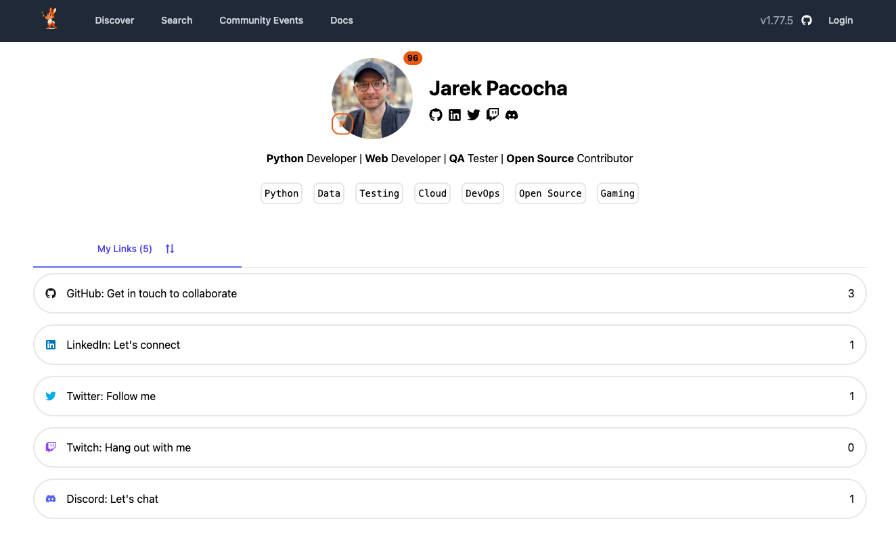

LinkFree

LinkFree is an Open Source project enabling anyone to showcase their content with a single link. You can create a profile by contributing to the repository on GitHub.
Features users can add to customize their profile:
- Bio: Short description
- Tags: Make profile more discoverable by adding tags that describe them
- My Links: Showcase any social media links
- Milestones: Demonstrate the highlights of career by adding milestones
- Events: Show the hosting or attending events
- Community Events: Upcoming events from the community profiles
- QR Code: Share the profile with unique QR code
There are 4 ways users can add their profile:
- GitHub UI
- Gitpod
- Local Development
- Local development with Docker Compose
↑ Go to Top